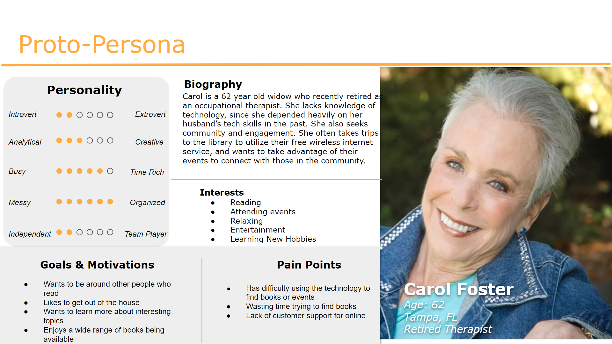
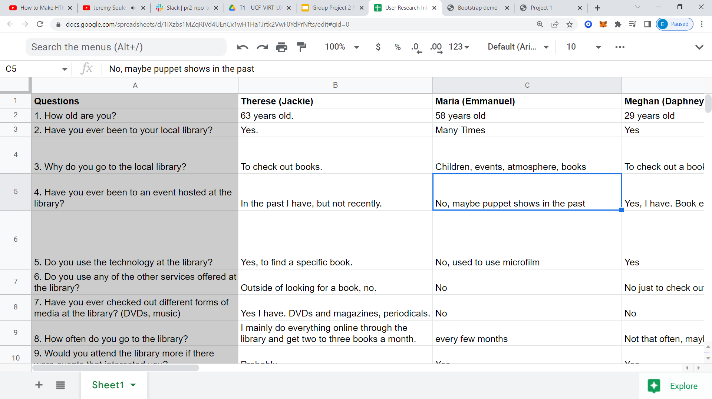
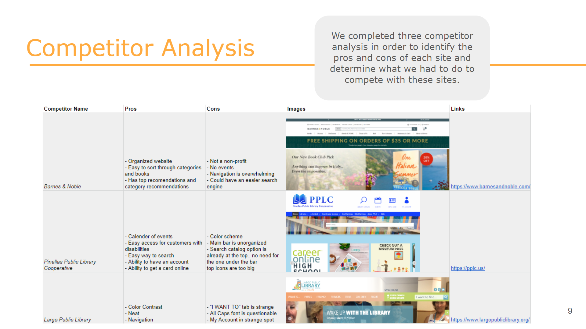
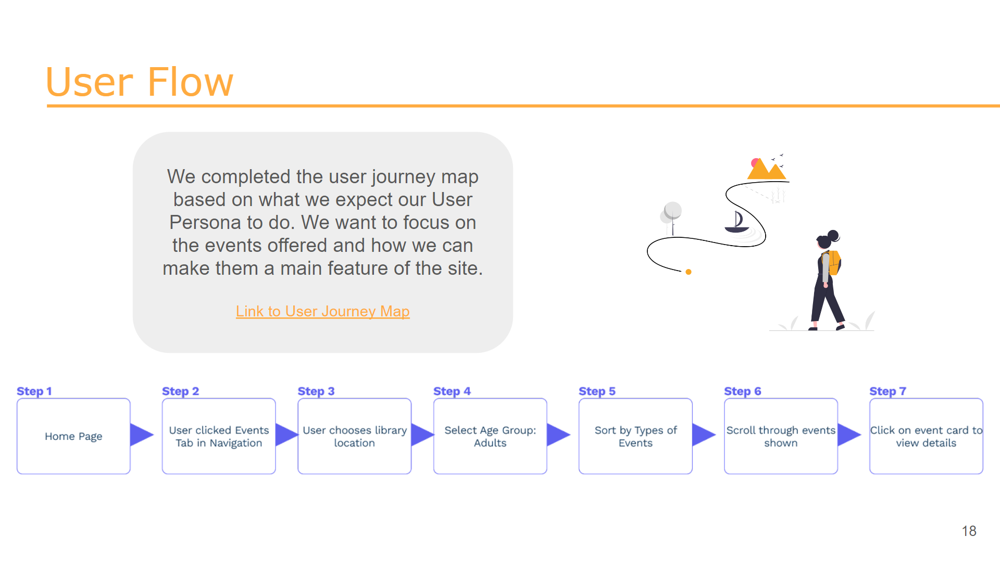
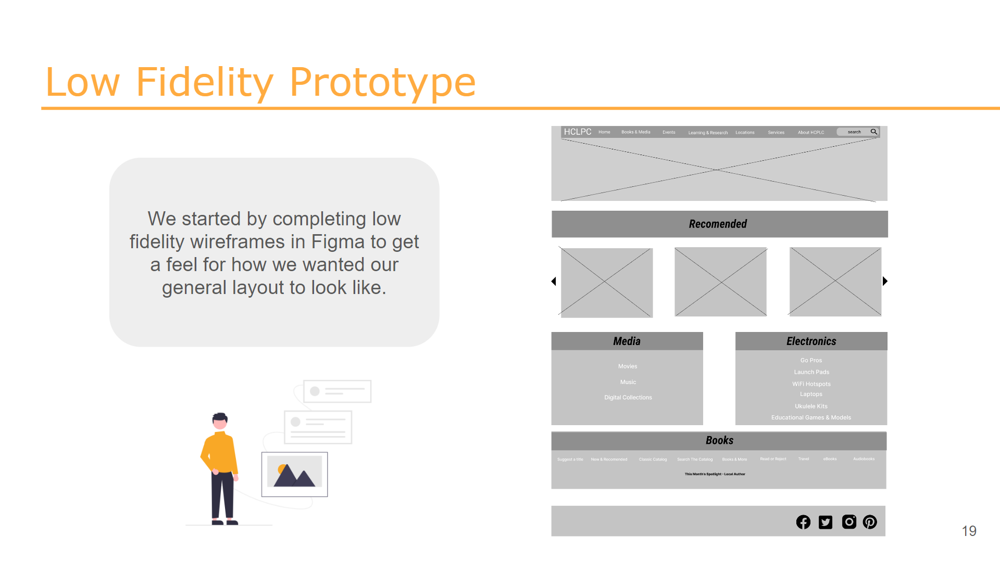
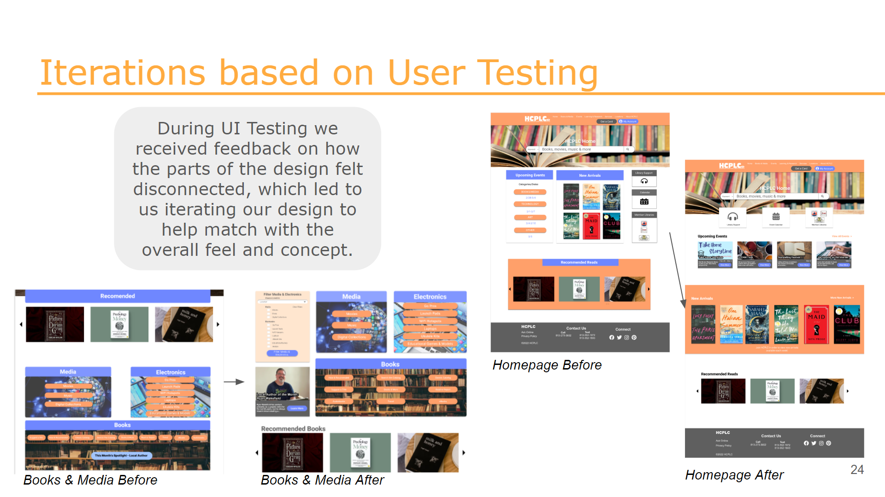
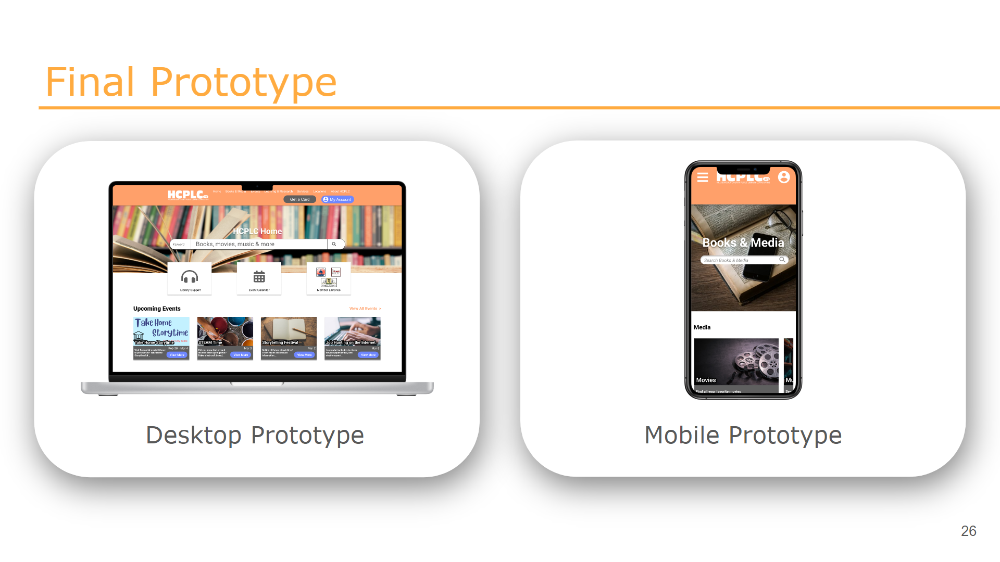

The Problem
It’s current design was slightly outdated and needed a new way to organize all the information and services offered on it. Our initial thoughts were that the navigation was a bit sloppy, images and color schemes gave headaches, and cards were used too much.
Old Web Page

New Web Page

Proto Persona
Seeing as how local libraries consist primarily of middle aged to elderly population, we thought the best persona for our prototype should be a middle aged woman. Meet Carol who is a recent retiree. She lacks technical knowledge. Due to now living alone and having difficulty adjusting, she is seeking community and engagement. She takes to her local library to utilize the technology, free wifi, and their frequent events to socialize and feel connected. Seeing as how the Hillsborough Library hosts frequent events; that is her primary focus.
User Research Interviews
We conducted research, beginning with our interviews. We interviewed 5 women between the ages of 55-65 years old and a 29 year old interviewee as our outlier to gain better perspective on the difference of use and needs of the library across other age groups. We asked questions such as; how long they spend at the library, what they do while there, if they have ever taken part in their events etc.
Affinity Diagram & Empathy Map
We gathered that our research participants utilized the library mainly for checking out books and dvds, and the technology is used to find books. Attending library events is not a common thread unless it aligned with their interest. Using our User Research Interviews, we were able to now create an empathy map that helps establish the parameters of our actual user persona. What they primarily do is used the library for checking out books and DVDs What they say is that they would attend events if it aligned with their interest According to personal observations they think the library consists mainly of older demographic .They feel the library is relaxing.

User Persona
After gathering our findings, our user persona is a middle aged woman by the name of Maddie. She is a 52 year old educator. She is an avid read and stresses the importance of reading to her students. She is also a grandparents that enjoys taking her grandkids to the library and attending events to help her interact with the community.
Competitor Analysis
Our competitors consists of Barnes and Noble, Pinellas Public Library, and Largo Public Library. Analyzing competitors helped us better understand how different libraries built their websites, and what they focused on promoting.
User Insight & Problem Statement
At this point we were able to use our user insight, which is knowing that HCPLC users need an easy and simple way to sort through and search everything on the site. This determined our problem statement - that users have a difficult time finding the information they need easily on the current site.
Value Proposition Matrix
From our research, we were able to create a value proposition matrix. This addressed users gains in terms of gaining a sense of community from events occurring at the library, and user pains such as sorting through library events that can be difficult. We hoped to offer a way to help promote these gains and relieve the pains through our redesign of the events pages and optimizing navigation.
Sitemap
We added ever more detail to what we felt was most important for our site, using the sitemap. At this point we felt ready to start prototyping.
User Flow
Low Fidelity Prototype
We started by completing low fidelity wireframes in Figma to get a feel for how we wanted our general layout to look like.
UI Style Tile
.png)
High Fidelity Prototype
Using our UI Style Tile, we went back into our low fidelity wireframes and added in our agreed upon designs to create our High Fidelity prototype. During this step we also added in interactions that would allow us to use this as a testable prototype.

User Testing & Iterations
Once our design was in it’s high fidelity stage, we were able to have potential users work through various tasks, such as finding the events calendar, sorting through events for specific interests, and discover a recommended book. From our user testing results and feedback given by users, we could see that one main iteration we had to make was based on the design itself. Users mentioned how the design felt disconnected in the sense of pages looking different from others. As a team we came together to compare our designs and choose aspects that we wanted included on all pages, which led us to a more cohesive design.
Final Prototype
Conclusion
In conclusion, we feel that we accomplished our main goal of highlighting events offered and allow users to view and search through them with ease. Our new design brings HCPLC.org into a more modern, fun, and energetic web environment. For our next steps, we would start by following some user feedback on combining the events pages and filters towards a more organized approach at viewing events. We would also like to incorporate more text information about recommended and featured books to show titles, authors, and genres. Having a page built out for new arrivals would also be beneficial for our book-loving users.